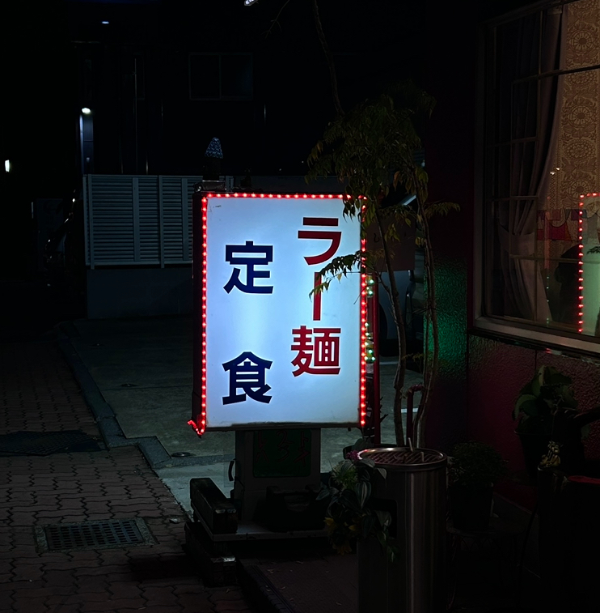
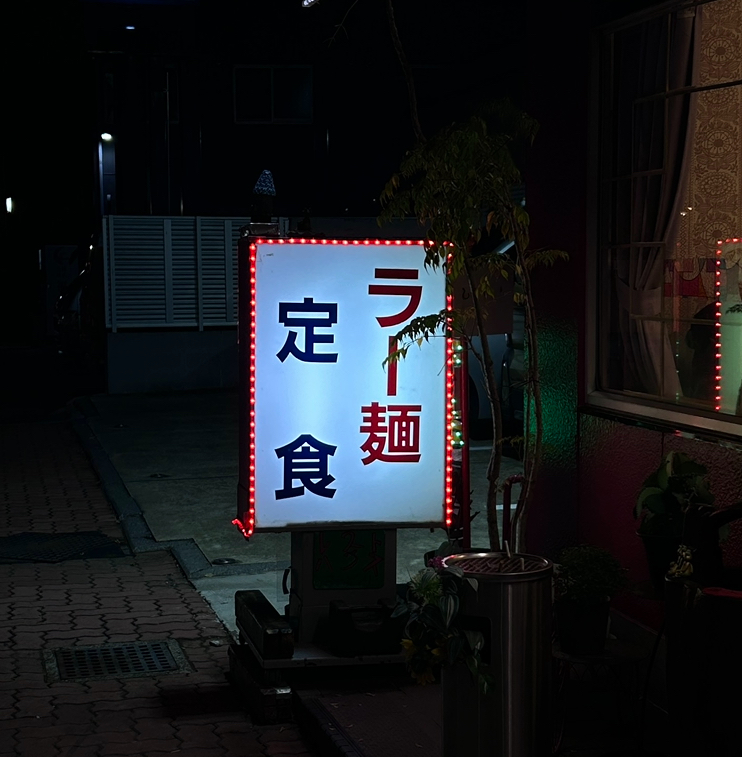

みどりという名前のこの食堂は地元住民にはもちろんバイカーにも人気である。
周りに店はなくぽつんと佇むみどり
奇抜な看板
 
 ミラーボールのようにカラフルが飛び交っておりもはや緑は主役ではない

屋上にもカラフル看板が設置されていることを今回初めて知った。
街灯の役割をも果たす”みどり”
みどりがあるこの道は道路沿いではあるがとても暗く安心できるような道ではない。だがみどりの看板はとても明るく安心感を与えてくれる街頭のような存在だ。
撮影者：小田 撮影日時場所：10/12 18:30 レストランみどり